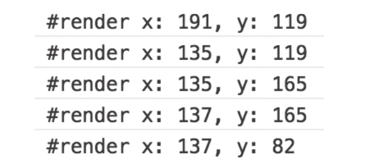
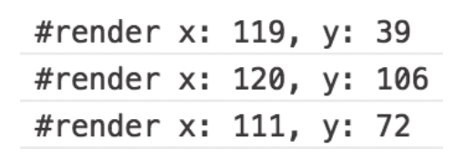

回到前面介绍combineLatest时遇到的glitch问题，如果我们用withLatestFrom，那么对应的多重依赖问题可以得到解决，因为产生的下游Observable对象中数据生成节奏只由一个输入Observable对象决定。
我们用withLatestFrom来处理同样的多重依赖问题，代码如下：
import {Observable} from 'rxjs/Observable';
import 'rxjs/add/observable/timer';
import 'rxjs/add/operator/withLatestFrom';
import 'rxjs/add/operator/map';
const original$ = Observable.timer(0, 1000);
const source1$ = original$.map(x => x+'a');
const source2$ = original$.map(x => x+'b');
const result$ = source1$.withLatestFrom(source2$);
result$.subscribe(
console.log,
null,
() => console.log('complete')
);
我们重新执行这个代码，产生的输出如下：
[ '0a', '0b' ] [ '1a', '1b' ] [ '2a', '2b' ] [ '3a', '3b' ]
从输出结果可以看出，没有glitch的问题，所以说，并不是combineLatest本身有问题，只是combineLatest并不适合于解决某些问题。
一般来说，当要合并多个Observable的“最新数据”，要从combineLatest和withLatest-From中选一个操作符来操作，根据下面的原则来选择：
·如果要合并完全独立的Observable对象，使用combineLatest。
·如何要把一个Observable对象“映射”成新的数据流，同时要从其他Observable对象获取“最新数据”，就是用withLatestFrom。
combineLatest会为输入Observable对象的每个next动作产生一个数据，很多情况下这是最理想的一种方式，但是，如果输入Observable对象之间有依赖关系，就会发生多个输入Observable对象同时产生数据的情况，这就是glitch现象。
glitch现象虽然存在，但是并不一定会造成bug，比如，在网页应用中，用combineLatest来合并用户操作事件产生的数据流，就可能发生glitch现象，但是从用户感知角度，可能完全注意不到。
提示
下面是一个combineLatest产生glitch的网页应用例子，在网页中显示当前鼠标的位置。在本书代码库的chapter-05/combination/src/combineLatest/glitch/glitch.html文件中可以找到完整代码。
网页中包含如下的HTML和CSS，id为text的元素用来展示鼠标位置坐标，CSS让body占满整个浏览器空间：
<style type="text/css">
html, body {
width: 100%;
height: 100%;
min-height: 100%;
}
</style>
<body>
<div>
<div id="text"></div>
</div>
</body>
接下来是JavaScript部分代码，利用combineLatest合并同样都衍生自鼠标点击事件的Observable对象：
const event$ = Rx.Observable.fromEvent(document.body, 'click');
const x$ = event$.map(e => e.x);
const y$ = event$.map(e => e.y);
const result$ = x$.combineLatest(y$, (x, y) => `x: ${x}, y: ${y}`);
result$.subscribe(
(location) => {
console.log('#render', location);
document.querySelector('#text').innerText = location;
}
);
当然，实际上我们要获得鼠标事件的x和y坐标值，并不是非得用上combine-Latest，这个例子只是用来展示glitch的实际效果。
当用户在网页中点击鼠标的时候，id为text的div元素中会显示最新的坐标位置，功能一切正常。但是，如果我们打开浏览器的console，可以看到实际上有点问题，如下所示：

我在网页中三个不同位置点击3次产生的日志输出，却产生了5条日志，这是因为第二次和第三次点击都分别产生了2条日志，原因就是event$被x$和y$共同依赖，而x$和y$又是combineLatest的输入，所以最终就产生了glitch。
在上面的例子中，当用户在坐标x为135、y为165的位置点击时，combineLatest会先产生一个数据，x为135但是y却是之前的值，随后，立刻再产生一个x为135而且y为165的数据，这个过程几乎没有间隔，所以从用户感知角度，根本感觉不到这一次数据的闪烁。
对于这个简单例子，这可能不算一个bug，如果对于渲染复杂的应用，glitch即使会让最终结果正确，但是因为产生多余的数据，可能引起太多不必要的渲染，从而影响性能，这时候就需要改进一下代码了，也就是要用withLatestFrom来解决。
使用withLatestFrom，前提是我们知道输出数据的节奏只需要和其中一个输入Observable对象一致就足够。在这个网页应用例子中，x$和y$都依赖于event$，当event$产生数据的时候，x$和y$都会产生数据，所以只需要从x$和y$中任意挑选一个作为控制数据的源头就可以了。
下面是改进的代码，只需要把combineLatest换成withFromLatest。
提示
完整的网页应用代码可以在本书代码库chapter-05/combination/src/withLatest-From/glitch/no_glitch.html文件中找到：
const result$ = x$.withLatestFrom(y$, (x, y) => `x: ${x}, y: ${y}`);
有了这个修改之后，在网页中三个不同位置点击鼠标三次，产生了三次日志输出：

这样，就减少了不必要的网页渲染。